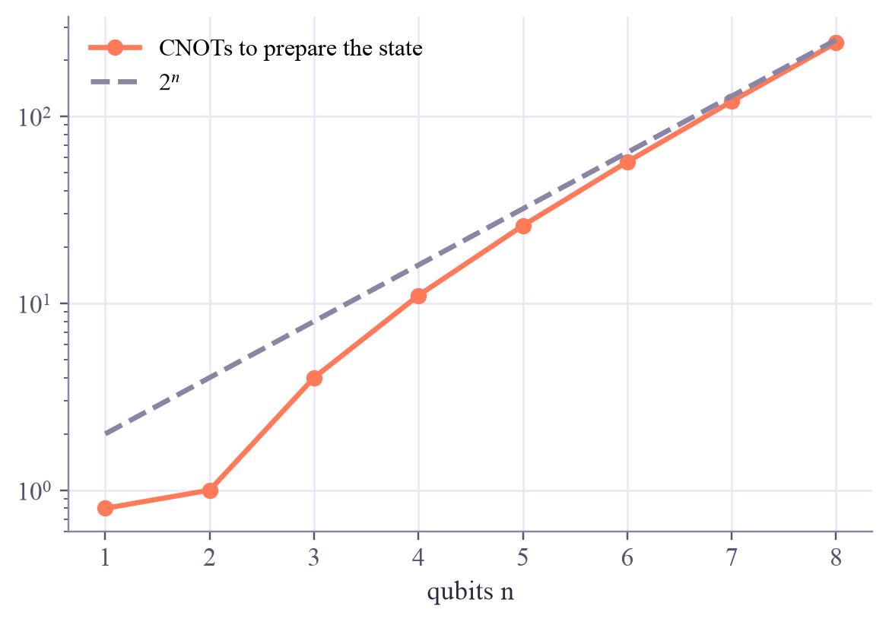
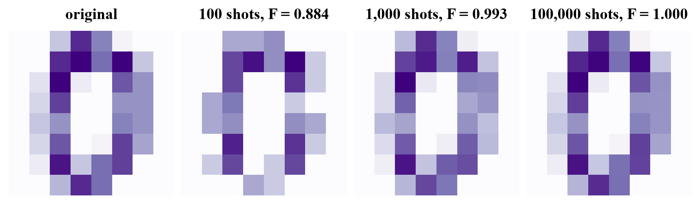

qubits: 6 probabilities = normalized pixels squared: True
Quantum Machine Learning
 about 12 min
about 12 min qml-w1d3.ipynb
qml-w1d3.ipynb
Amplitude encoding and qubit budgets
Pack 2ⁿ numbers into n qubits: an exponential squeeze. Then count what it really costs to load the data in and read it out, and plan a qubit budget.
In this lesson you will
- Amplitude-encode a vector of numbers into qubits
- Explain the costs: about gates to prepare the state, many shots to read it
- Plan a qubit budget, using PCA to shrink the data first
Warm-up
1 minAn exponential suitcase

Ten qubits have 1,024 amplitudes; fifty have more than a quadrillion. If each amplitude held one number of your data, a handful of qubits could hold an enormous dataset. That's amplitude encoding, and it's real. But a suitcase is only useful if packing and unpacking it don't take forever.
Big idea
4 minSqueeze in, and the price
Amplitude encoding. Take a vector with entries, normalize it, and use the entries as amplitudes:
An 8 × 8 digit (64 pixels) becomes a state of just 6 qubits. Normalizing forgets the vector's length, so and become the same state; only the proportions survive.
The price of packing. A circuit must prepare that state from . For an arbitrary vector this takes on the order of CNOTs: 57 for our digit, about a million for 20 qubits. If loading the data costs as much as the computation could save, the advantage evaporates: the input problem. (A "quantum RAM" would help, but no large one exists.)
The price of unpacking. Measuring gives one basis state per shot, so estimating all amplitudes takes many shots, again growing with . Good quantum algorithms never read all the amplitudes; they only estimate a few expectation values.
Qubit budgets. Angle encoding: one qubit per feature, almost no gates. Amplitude encoding: qubits, about gates. Today's simulators manage about 30 qubits, and hardware is noisy, so the common recipe is: shrink the data with PCA (ML week 6), then angle-encode the few components left.
Amplitude encoding packs numbers into qubits, but loading them costs about gates and reading them back about as many shots.
Play
4 minA digit in six qubits
The digit's 64 pixels become 64 amplitudes. Measure the six qubits and try to read the image back from the shots.
And the budget for bigger data:
Try this
How many shots before the read-back image has a fidelity above 0.98? In the budget, slide to 4,096 features: compare 12 qubits with thousands of CNOTs against 4,096 qubits with none. Neither is practical today, which is why PCA comes first.
Code
2 minAmplitude encoding in Qiskit
The notebook for this lessonEvery code cell below, with what it printed, is in
qml-w1d3.ipynb. To change the code and run it yourself, open the notebook in Google Colab (free, in your browser) or download it for your own Jupyter.import numpy as np
import matplotlib.pyplot as plt
from qiskit import QuantumCircuit, transpile
from qiskit.circuit.library import StatePreparation
from qiskit.quantum_info import Statevector
from sklearn.datasets import load_digits
digits = load_digits()
x = digits.data[0] # a "0": 64 pixel values
amplitudes = x / np.linalg.norm(x) # a state must have length 1
state = Statevector(amplitudes) # 64 amplitudes = 6 qubits
print("qubits:", state.num_qubits)
print("probabilities = normalized pixels squared:", np.allclose(state.probabilities(), amplitudes ** 2))What it printed in the notebook
rng = np.random.default_rng(0)
ns, cnots = range(1, 9), []
for n in ns:
v = rng.normal(size=2 ** n)
qc = QuantumCircuit(n)
qc.append(StatePreparation(v / np.linalg.norm(v)), range(n))
cnots.append(transpile(qc, basis_gates=["cx", "u"], optimization_level=1).count_ops().get("cx", 0))
print(f"{n} qubit{'s' if n > 1 else ' '} ({2 ** n:3d} numbers): {cnots[-1]:3d} CNOTs")
plt.semilogy(list(ns), np.maximum(cnots, 0.8), "o-", color="#ff7a59", label="CNOTs to prepare the state")
plt.semilogy(list(ns), 2.0 ** np.array(ns), "--", color="#8a85a3", label=r"$2^n$")
plt.xlabel("qubits n")
plt.legend()
plt.show()What it printed in the notebook
1 qubit ( 2 numbers): 0 CNOTs 2 qubits ( 4 numbers): 1 CNOTs 3 qubits ( 8 numbers): 4 CNOTs 4 qubits ( 16 numbers): 11 CNOTs 5 qubits ( 32 numbers): 26 CNOTs 6 qubits ( 64 numbers): 57 CNOTs 7 qubits (128 numbers): 120 CNOTs 8 qubits (256 numbers): 247 CNOTs

fig, axes = plt.subplots(1, 4, figsize=(8, 2.3), layout="constrained")
axes[0].imshow(x.reshape(8, 8), cmap="Purples")
axes[0].set_title("original")
for ax, shots in zip(axes[1:], [100, 1000, 100000]):
counts = np.bincount(rng.choice(64, size=shots, p=amplitudes ** 2), minlength=64)
estimate = np.sqrt(counts / shots)
ax.imshow(estimate.reshape(8, 8), cmap="Purples")
ax.set_title(f"{shots:,} shots, F = {np.dot(estimate, amplitudes) ** 2:.3f}")
for ax in axes:
ax.axis("off")
plt.show()What it printed in the notebook

from sklearn.decomposition import PCA
for k in [4, 6, 8]:
pca = PCA(n_components=k).fit(digits.data)
print(f"PCA to {k} components keeps {pca.explained_variance_ratio_.sum():.0%} of the variance -> {k} qubits with angle encoding")
print("for comparison: 64 qubits for angle encoding of all pixels, or 6 qubits and ~57 CNOTs for amplitude encoding")What it printed in the notebook
PCA to 4 components keeps 49% of the variance -> 4 qubits with angle encoding PCA to 6 components keeps 59% of the variance -> 6 qubits with angle encoding PCA to 8 components keeps 67% of the variance -> 8 qubits with angle encoding for comparison: 64 qubits for angle encoding of all pixels, or 6 qubits and ~57 CNOTs for amplitude encoding
Your turn
2 minYour turn: what amplitude encoding forgets
Amplitude-encode iris flowers (4 features, 2 qubits). Show that a flower and its double-size copy give the same state, and compare two different species.
from sklearn.datasets import load_iris
iris = load_iris()
flower = iris.data[0]
def amp_state(v):
return None # TODO: Statevector(v / np.linalg.norm(v))
# TODO: compare amp_state(flower) and amp_state(2 * flower) with state_fidelity, then a setosa (row 0) and a virginica (row 100)Need a hint?
Statevector(v / np.linalg.norm(v)) is the whole encoding; state_fidelity(a, b) compares two states.
Show a solution
from sklearn.datasets import load_iris
from qiskit.quantum_info import state_fidelity
iris = load_iris()
flower = iris.data[0]
def amp_state(v):
return Statevector(v / np.linalg.norm(v))
print(f"a flower and its double: fidelity {state_fidelity(amp_state(flower), amp_state(2 * flower)):.4f}")
print(f"setosa vs virginica: fidelity {state_fidelity(amp_state(iris.data[0]), amp_state(iris.data[100])):.4f}")
print("The size of the flower is gone; only its proportions remain. Very different flowers can still look")
print("alike, because all four iris features are positive: every state sits in one corner of the sphere.")What it printed in the notebook
a flower and its double: fidelity 1.0000 setosa vs virginica: fidelity 0.7397 The size of the flower is gone; only its proportions remain. Very different flowers can still look alike, because all four iris features are positive: every state sits in one corner of the sphere.
Check yourself
1 minQuick check
Question 1 of 3
How many qubits does amplitude encoding need for 1,024 numbers?
Question 2 of 3
What's the main practical problem with amplitude encoding?
Question 3 of 3
A vector and the vector are amplitude-encoded. What's the fidelity of the two states?
Wrap-up
1 minToday in one sentence
Research link
The input problem is a recurring theme: several famous quantum speedups for linear algebra assume the data is already loaded as amplitudes. When that loading is counted, or when a classical algorithm gets similar "sampling" access to the data, the advantage can shrink or vanish (Tang's "dequantization" results).
Go deeper (optional)
Aaronson, "Read the fine print" (Nature Physics, 2015), is a short, sharp essay on the input and output problems of quantum machine learning. Schuld and Petruccione's book, chapter 4.3, covers amplitude encoding and state preparation.
Next in Quantum ML: feature maps that entangle the qubits.

That's the lesson!
Tap the button to save it. Short and steady wins.
Marked by mistake? Undo